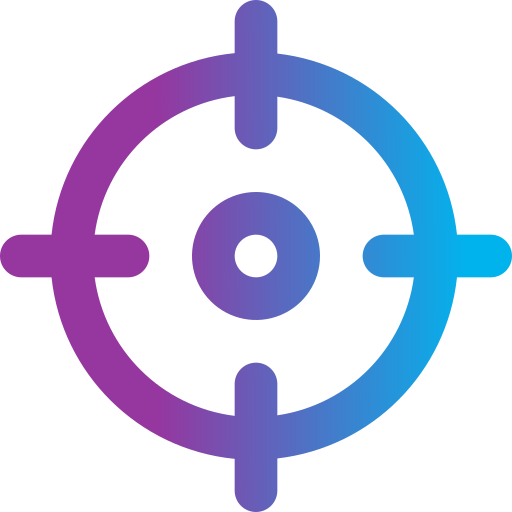

OnlyFPS

Bem-vindo
Os jogos FPS (ou First-Person Shooters, em inglês) são exatamente o que o nome descreve: jogos em que a visão do personagem é em primeira pessoa e a mesma do jogador, para maior imersão. Títulos do gênero são geralmente focados em tiro, ação com armas de fogo ou brancas para combate corpo a corpo, com algumas variações.
As principais características de um jogo FPS são a visão ampla do personagem, colocando o jogador em sua posição no mapa e permitindo a visualização de todo o ambiente à sua volta, o foco no combate, preferencialmente com armas de fogo mas também pode incluir armas de combate corpo a corpo, e grande quantidade de inimigos a serem combatidos. Caso o jogo seja um multiplayer, os jogadores se organizam em times que se enfrentam, até que um lado saia como vencedor.
Por via de regra, o jogador não é capaz de ver o personagem que controla por completo, exceto em momentos-chave como cutscenes, ou usando elementos de cenário que sirvam como espelhos. As únicas partes visíveis são as mãos em geral, portando as armas e/ou equipamentos que você tem à disposição.